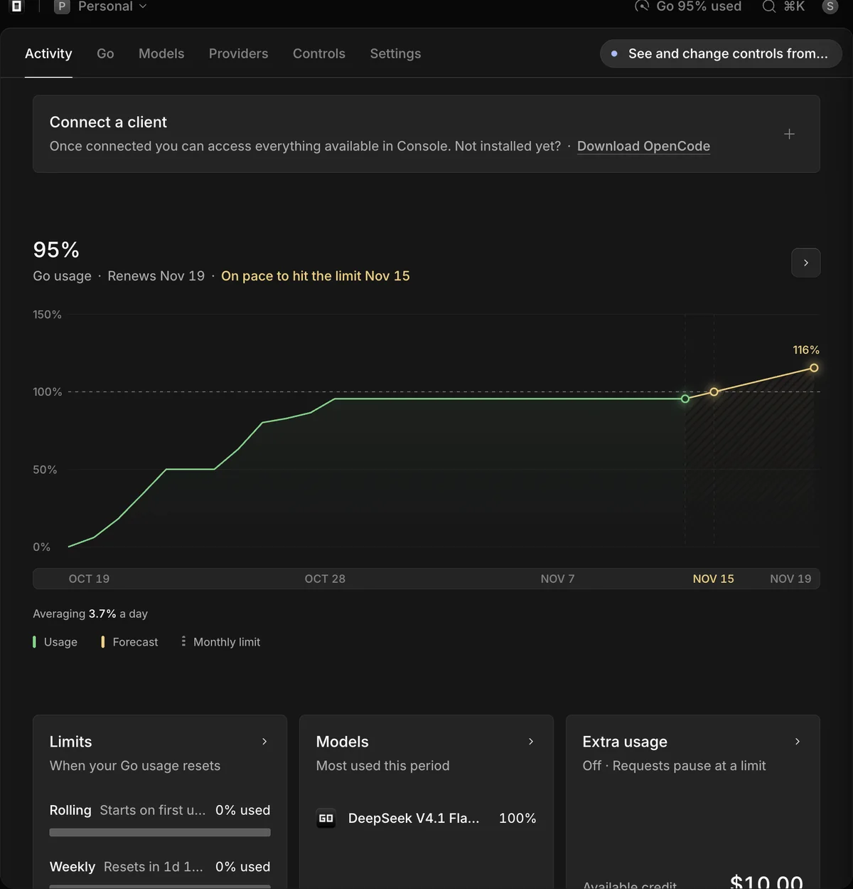
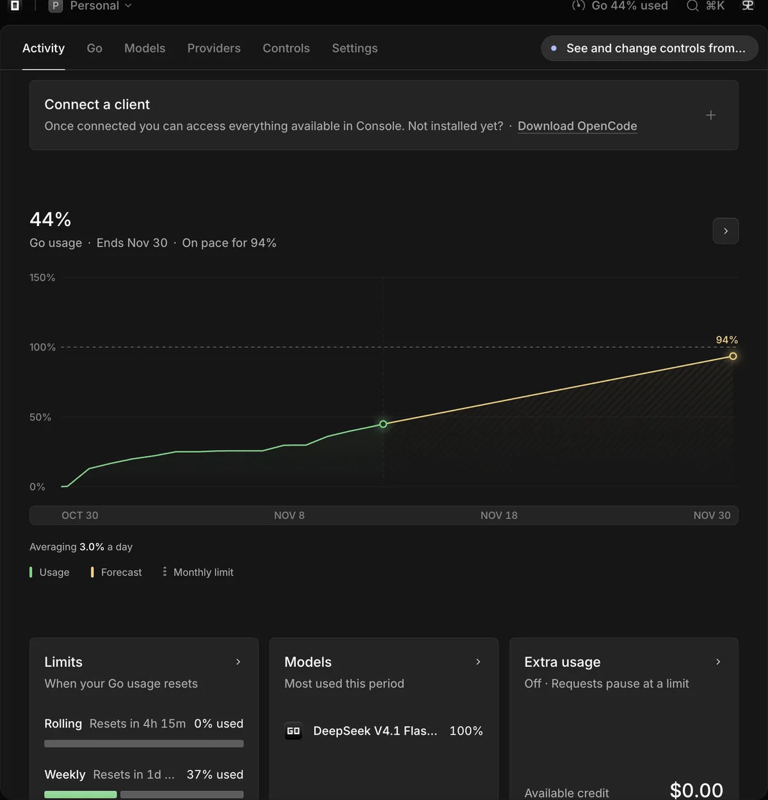

Two stages: preview, then apply
In Analyze, every file-modifying tool runs in dry-run — it returns the exact diff and writes nothing. You see what would change before anything is touched. Switch to Build when you are happy.
safetydiffs
SPLTEK · LLM AI HARNESS
AI CODING AGENT
A full agent that lives in your Activity Bar. It reads your project, edits files, runs commands, searches the web and keeps one persistent conversation per folder — with tool calling and live streaming.
Bring your own model. Cloud, or a model on your laptop. One protocol: the
OpenAI Chat Completions API.
@@ -42,6 +42,24 @@ export class HttpClient
async request(url: string, init: RequestInit) {
- return fetch(url, init)
+ for (let attempt = 0; ; attempt++) {
+ const res = await fetch(url, init)
+ if (res.ok || !isRetryable(res.status)) return res
+ if (attempt >= this.maxRetries) return res
+ await sleep(Math.min(2000, 250 * 2 ** attempt))
+ }
}DEMO / ONE SESSION
“Harny creates its own website” — the session that produced this page, recorded end to end.
 Play
Play
01 / WHY HARNY
Every design decision in Harny answers a failure mode of agents that write into your repo without asking. Here is what that buys you.
In Analyze, every file-modifying tool runs in dry-run — it returns the exact diff and writes nothing. You see what would change before anything is touched. Switch to Build when you are happy.
safetydiffs
OpenAI, Anthropic, OpenRouter, or a model on your own machine with Ollama, LM Studio or llama.cpp. One dropdown, per session.
Turn on Parallel and the agent becomes an orchestrator: it splits the task into independent sub-tasks and runs them as sub-agents — each with its own stream and its own stop button.
Keep typing while it works. Enter queues, ⌘/Ctrl+↵ steers mid-flight. Esc stops everything.
When the context fills, Harny compacts at turn boundaries, keeps the recent part verbatim and carries the state of the work forward.
Every turn shows real token usage and timings. Every tool call shows its input, its output and its diff. Reasoning streams as it happens. Focus keeps the section the agent is working in open and folds the one it has just left — so you follow the run at reading size, and can steer the moment something looks wrong.
Sessions are stored in a central SQLite database — not in your repo. Agent tools can never read or corrupt transcripts, and cleaning your project never deletes your chat history.
02 / ANALYZE & BUILD
A run is born with its mode and keeps it to its last tool result. The pills explain why instead of swallowing the click — Stop is the way to interrupt.
@@ -0,0 +1,24 @@
+import { sleep } from "./sleep"
+
+export interface RetryOptions {
+ maxRetries?: number
+ baseDelayMs?: number
+}
+
+export const isRetryable = (status: number) =>
+ status === 429 || status >= 500
+
+export async function withRetry<T>(
+ run: () => Promise<T>,
+ { maxRetries = 4, baseDelayMs = 250 }: RetryOptions = {},
+): Promise<T> {
+ for (let attempt = 0; ; attempt++) {
+ try {
+ return await run()
+ } catch (e) {
+ if (attempt >= maxRetries) throw e
+ await sleep(Math.min(2000, baseDelayMs * 2 ** attempt))
+ }
+ }
+}Nothing was written. The exact diff is returned so you can review it. Switch to Build to apply.
03 / PARALLEL
Disjoint files run in parallel. Overlapping writers — or a writer and a reader of the same resource — are
serialized automatically, because every Delegate declares its resources honestly.
Write vitest coverage for src/sessions/compactor.ts
Update README.md compaction section + table
Fix tsconfig strict errors in src/core/llm
aborted, so the orchestrator never treats it as done.WATCH / PARALLEL RUN
The diagram above, running for real: one orchestrator, three delegates, overlapping files serialized on the fly.
 Play
Play
04 / LONG SESSIONS
The context window is visible in the transcript: a divider marks where the context begins, and the checkpoint is one card with its summary attached.
The cut falls between complete turns — your input → the final answer, everything in between — and inside one only when that turn alone exceeds the budget.
The trigger defaults to 80% of the usable context; the most recent share stays verbatim. Two independent knobs, one honest preview of the plan.
A later compaction updates the previous summary instead of summarizing a summary — a fact is not lost per generation.
Old tool outputs go as one-line stubs that name the tool. The transcript, the store and any branch keep everything.
A context-length error triggers one compaction and a retry — and the limit the provider states is adopted as the session window.
Eight rules are checked before the wire. A violation is refused by name, instead of poisoning every later request.
withRetry() in src/llm/retry.ts, exported.http.ts:42, models.ts:88.npm test, expect 2 failures.2000ms; retry on 429 and 5xx.EVIDENCE / TWO BILLING PERIODS
Two months of the same subscription, the same model, the same kind of work. The one thing that changed is how much context rides on every request.


WATCH / CONTEXT COMPACTION
The meter above, filling up for real: the cut between complete turns, the checkpoint card, the window moving on.
 Play
Play
05 / THE HARNESS
Every tool is a class in its own file behind a small interface. Adding one is registering it — the agent
and the providers never change. MCP servers arrive as mcp__<server>__<tool>.
Small models loop in their reasoning and in their tool calls. A loop is not an error to swallow: it gets a Nudge that pushes the model past it.
12 tunable parameters · persisted per session
06 / THE GUARD
Small and local models fail in three shapes: reasoning that chases its own tail, the same tool call retried verbatim, an answer that repeats itself. The guard cuts the stream and injects a Nudge — a correction aimed at the loop, so the model gets out of it instead of being shut down.
Read harny.json — a different action, and the run continues
Four presets points inside the ranges
Twelve knobs clamped · edited per session
Glob, Grep and Read — the classic Shell loop ends there.
07 / MCP
A server is a fact about the machine; which of its tools a conversation may use is that conversation's
decision. Every tool arrives as mcp__<server>__<tool> — and none of them runs in
Analyze unless you say so.
stdio — command, arguments, environment — or http — url, headers. Added from
the panel or straight into config.json, listed with its status, reconnected after a crash,
and switched off without being deleted.
A new conversation starts with every MCP server off. Switch on the one this task needs, and switch off single tools — of a server or a built-in — without touching the conversation next door.
per sessionno recompile
Read-only in Analyze is an include list, not an exclusion: only the tools you declare can run there. A tool the server adds tomorrow is not silently allowed to write during a preview — and the declaration is per session, like everything else.
analyzeToolsread-only
// config.json — install is machine-level, the scope is per session
{
"mcpServers": {
"files": {
"command": "npx",
"args": ["-y", "@modelcontextprotocol/server-filesystem", "."],
// ⟵ the ONLY tools of this server allowed in Analyze
"analyzeTools": ["read_file", "list_directory"]
}
}
}08 / SKILLS
A skill is a folder with a SKILL.md, in .agents/skills,
.claude/skills or .pi/skills — project or user level. The system prompt carries
only its name and description; the body is read when the skill is activated, and not before.
/skill <name> <task> injects
that skill's instructions ahead of your task — the model's own activation decision is bypassed,
so “do it this way” is an instruction, not a hope.
/skills lists what is installed, with the description it was installed with.
A skill with disable-model-invocation is manual only: the model never reaches for it.
09 / ONE PROTOCOL
Harny is openai-compatible by design, so anything that implements /v1/chat/completions works.
Model lists can be declared by hand or discovered from the server — including each model's real context
window.
Switch models from one dropdown, per session. Keys live in Harny's own data folder — never in your project.
10 / UNDER THE HOOD
The core layer has zero VS Code imports — every collaborator is created in the composition root and injected through constructors. Which is why the suite has 3000+ unit tests.
# composition root
src/
├─ extension.ts # wires every dependency
├─ core/ # VS Code-free domain layer
│ ├─ config/ events/ history/
│ ├─ llm/ # provider, SSE, context-overflow
│ ├─ agent/ # loop, LoopGuard, orchestration
│ ├─ sessions/# sqlite + FTS5, Compactor
│ ├─ skills/ mcp/ storage/
│ └─ tools/ # 14 tools, one file each
├─ chat/ # webview provider + client
└─ logger.ts
tests/ # vitest, guards, mutation matricesPRAGMA user_version).HARNY_DEBUG=1 writes a full request log.11 / INSTALL
code --install-extension spltek.harny-<version>.vsix
It sits in the Activity Bar. Sessions are per workspace.
Or let the panel do it: with no folder open it lists every workspace's sessions.
The gear at the right end of the AI Model row → + New → paste your key → Test connection.
New sessions start in Analyze, so your first run is a preview, not a surprise.
node:sqlite
License MIT